BIM Specialist & Project Coordinator
The site survey turned up a 1-meter level change that created a serious structural conflict, in a house with irreparable water damage — and a footprint that extended past the legal building line. A large household depended on that space, so every technical decision was also a social one.
I organized the works in two phased blocks, using the level break itself as the project's axis: the household stayed in the existing block while Block 1 went up with full services, and relocated only once Block 2 could be built on the demolished footprint. I negotiated the household's own labor into the partial demolition, drawing on their construction experience to cut both schedule and cost.
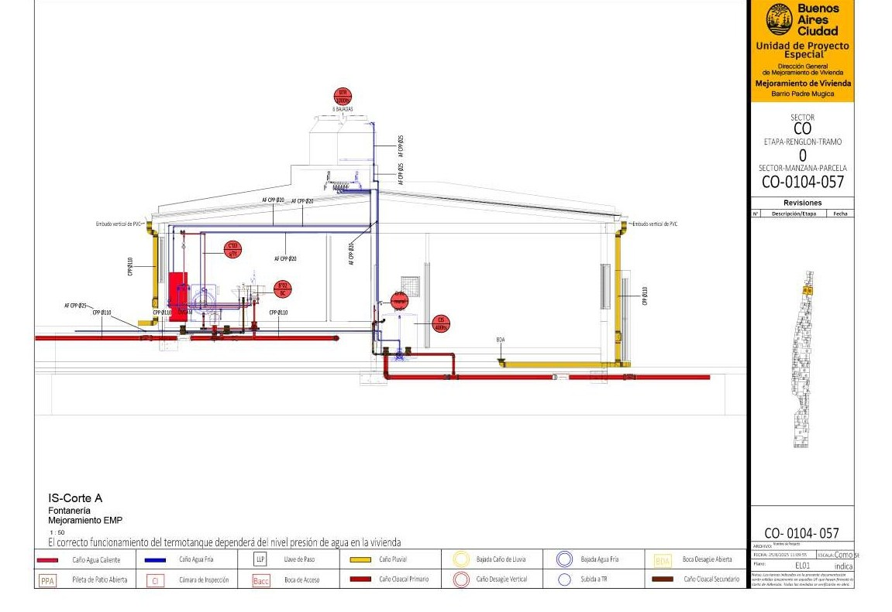
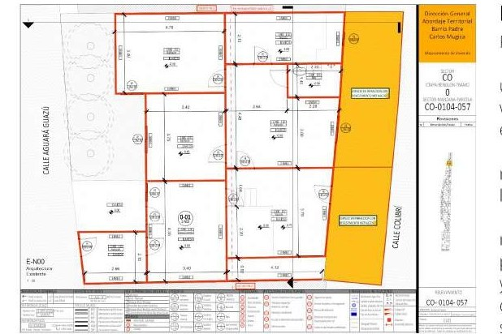
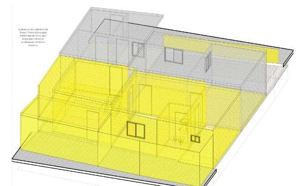
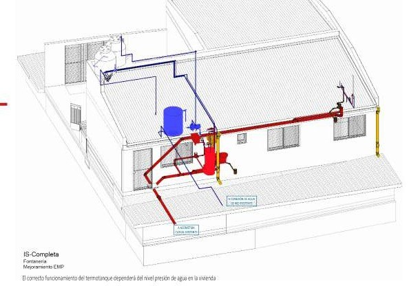
A court injunction set a hard deadline. Beyond the legal pressure, the two adjoining lots carried real structural risk and an active dispute between neighbors — the project had to deliver safe housing and, at the same time, mediate that conflict.
Both existing structures were discontinuous and beyond repair, so full demolition was the starting point. I proposed two twin buildings, built to identical specifications — a design decision that resolved the neighbor dispute directly: each household recovered the floor area it was entitled to, rebuilt as dignified, move-in-ready space.
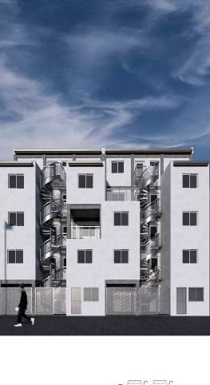
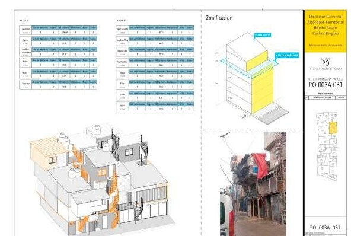
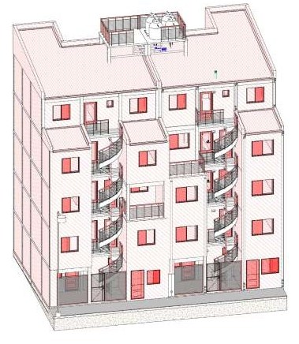
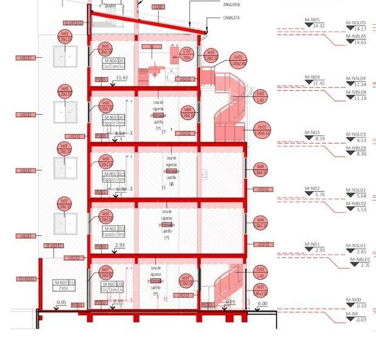
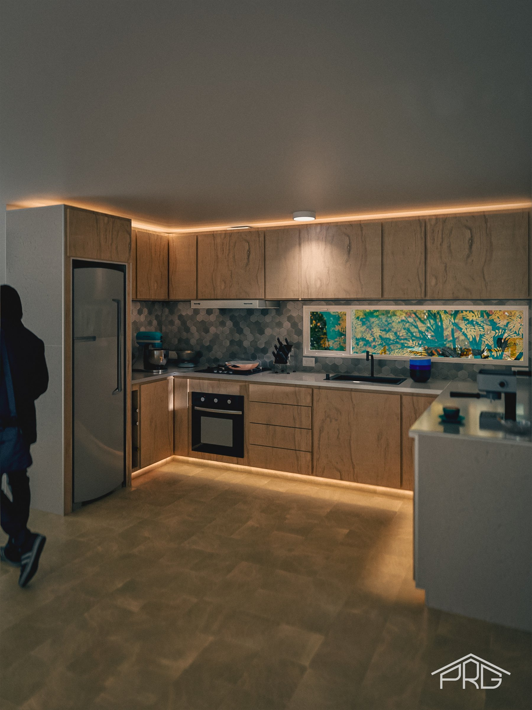
A four-module kitchen designed around the client's existing porcelain tile stock. I modeled the full cabinetry in SketchUp, rendered it in Twinmotion for client sign-off, and produced the fabrication package myself: a piece-by-piece cut list and an assembly manual built from exploded axonometric sequences — the same documentation discipline I developed for BIM projects, applied here to millwork.
Every joint, clearance and hardware specification in the manual traces back to a single source-of-truth document, so a correction on site updates the whole package instead of leaving one sheet out of date.
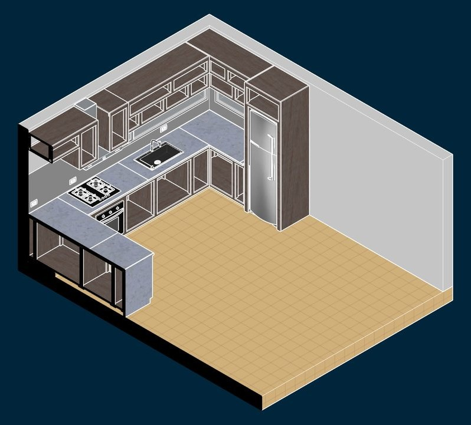
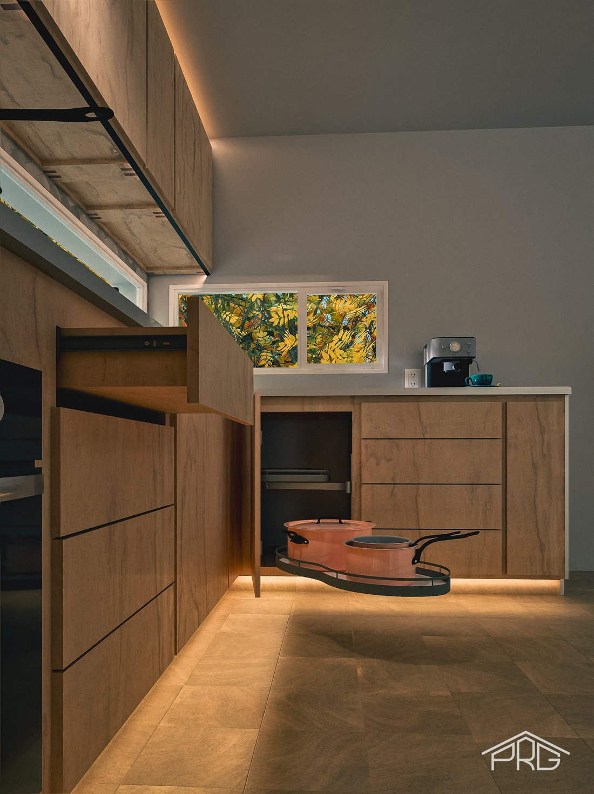
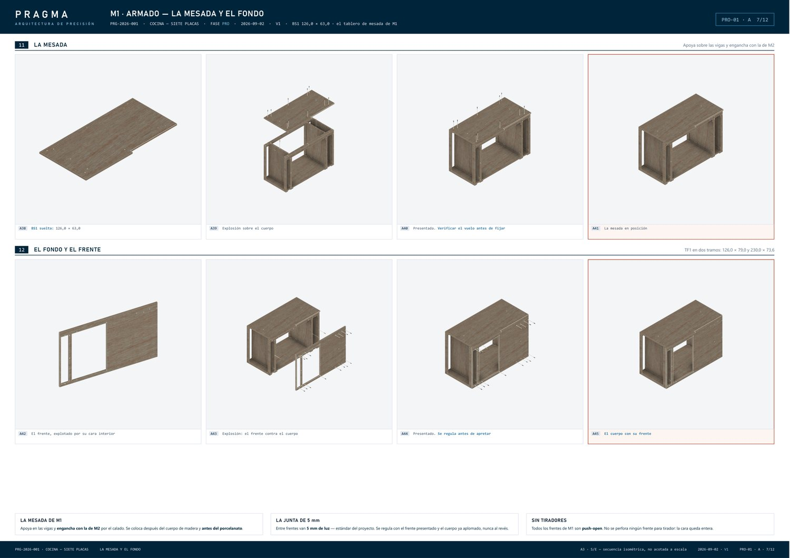
The same cabinetry that was modeled, rendered and documented — built.
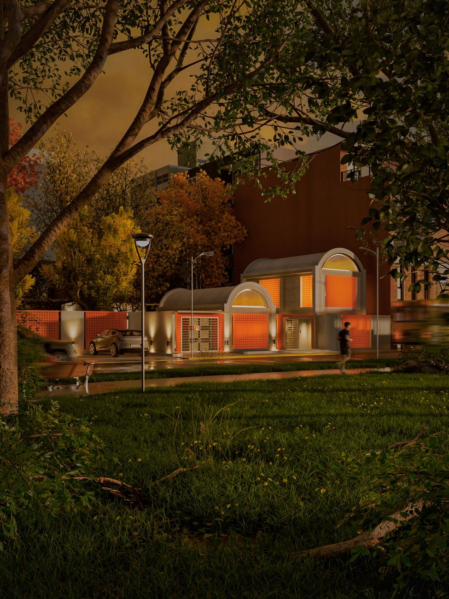
A residential design study built around perforated-brick screens and a night lighting scheme — an early FADU exploration of massing and material contrast, later reworked with my current design and rendering methodology.